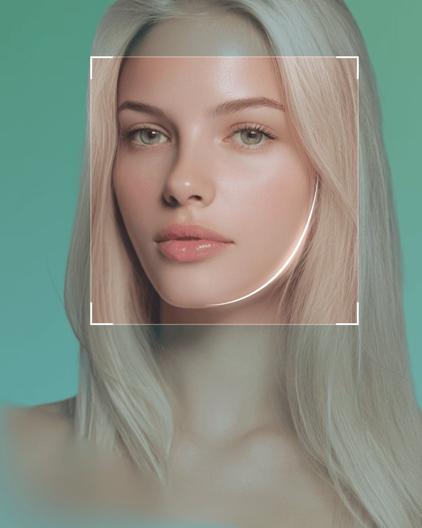
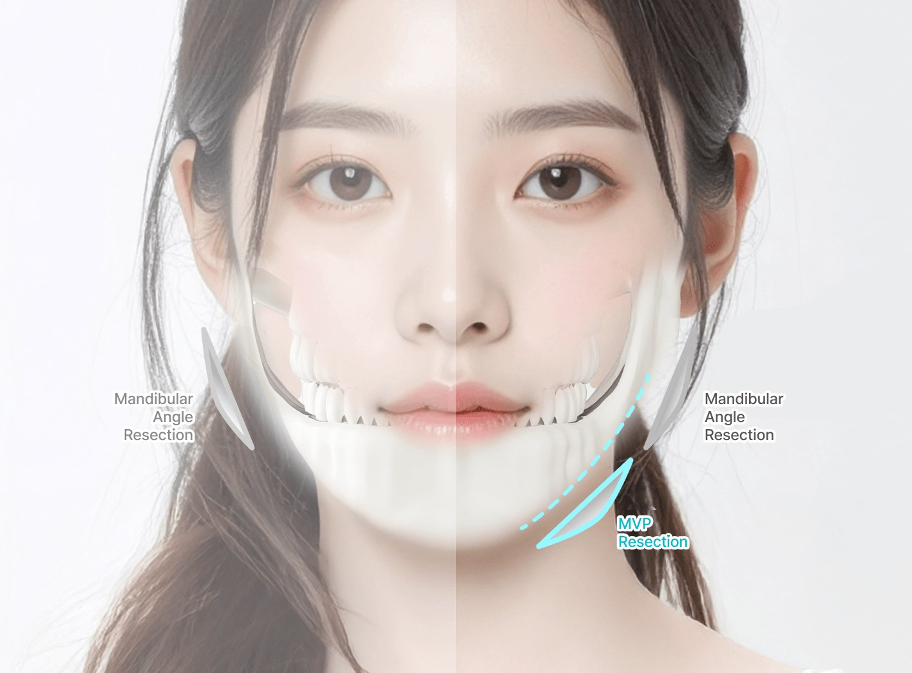
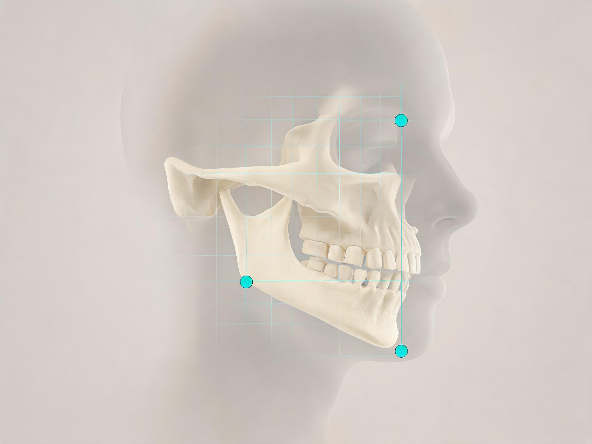
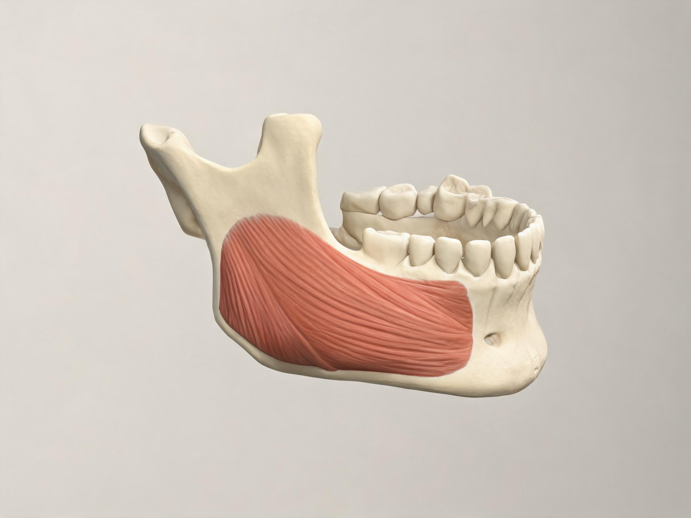
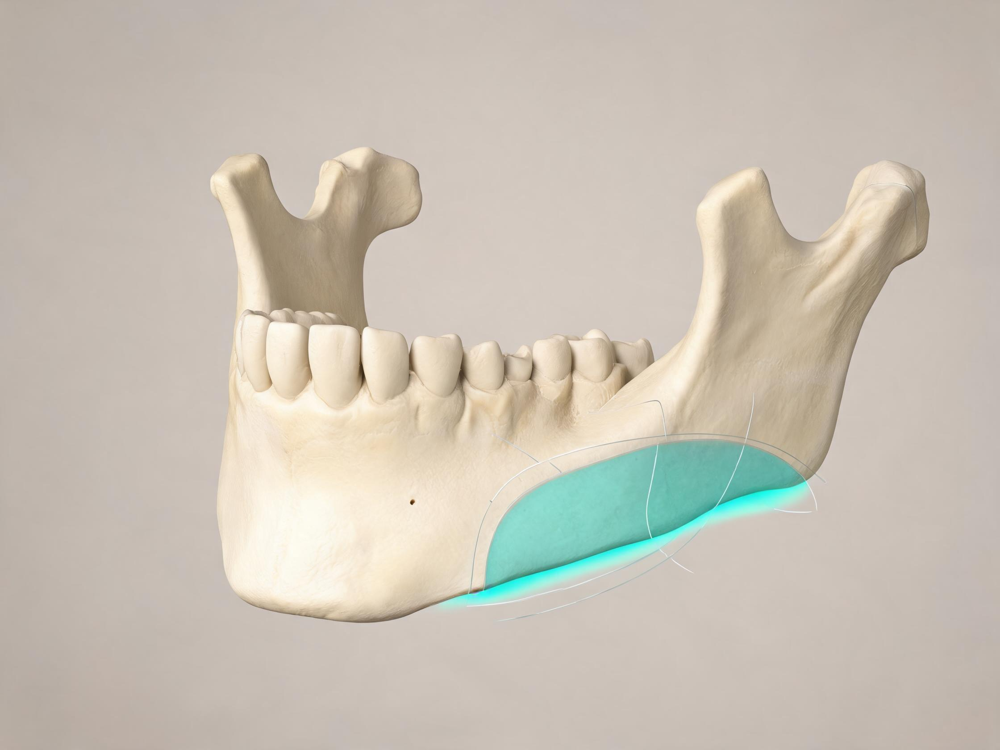
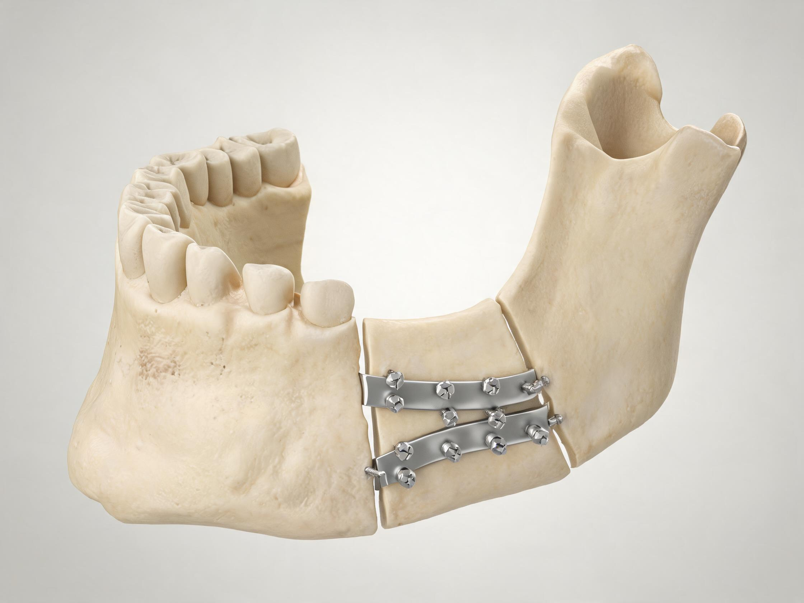
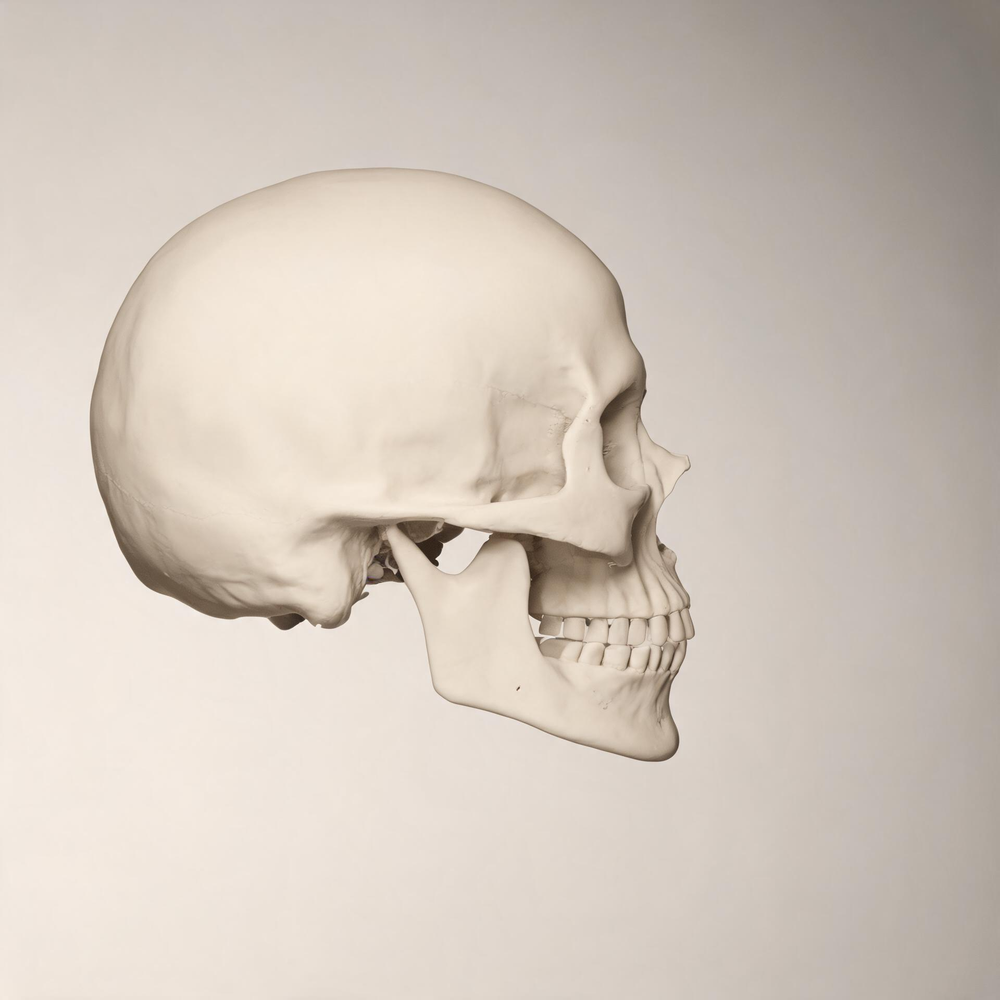

轻轻一笔，即可重塑您的面容
——MVP 下颌线的艺术
MVP 下颌骨缩小术
为什么选择 凡是与美
先判断宽度来自骨骼、咬肌，还是两者叠加；
再决定截骨与软组织处理的比例。
沿下颌缘弧线截骨： 保留下颌角形态与支撑，避免生硬的直线切面，侧面过渡更自然。
按影像测算去除量： 以术前 CT 与面部比例确定骨量，控制缩窄幅度，避免过度削弱支撑。
咬肌与颊脂垫按需处理： 骨骼与软组织的量分开判断，减少术后松垂与轮廓不平整。
口内切口： 面部无可见疤痕；恢复按阶段推进，每次复查都有明确的判断标准。
真实案例
凡是与美 MVP 方颌缩小术

常规下颌手术
MVP 方颌缩小术
针对下颌容积最大的区域 MVP（最大容积点）精准缩小骨骼，在不过度切除的前提下改善下颌线，正面、侧面与 45° 都能看到收窄效果。
下颌角手术方法
 弧线下颌角切除术
弧线下颌角切除术沿柔和的弯曲线条，从耳部与下颌角到下巴前方去除下颌骨的最大容积，打造平滑、自然的下颌线，没有棱角或不自然的外观。
 皮质骨切除术
皮质骨切除术去除下颌的外侧皮质骨，完善整体面部比例，不仅从侧面，从前视角也能打造更纤细、更精致的外观。
 咬肌缩小术
咬肌缩小术通过肌肉缩小术减少增大、过度发育的咬肌的大小，打造更纤细的下颌线。
*这些手术可能产生额外费用。 颊脂垫与脂肪去除
颊脂垫与脂肪去除通过去除深层面颊区域的颊脂垫和皮下脂肪，改善松弛的面部轮廓，从而形成更清晰、更纤细的面部线条。
*这些手术可能产生额外费用。
下巴缩小手术方法
 下巴尖宽钝
下巴尖宽钝采用T形截骨，去除中央骨段，将两侧剩余骨块合拢，使下巴变窄。
 下巴尖过长，显得脸长
下巴尖过长，显得脸长采用三明治式截骨，同时缩短下巴尖的长度与宽度。
 下巴短而钝
下巴短而钝无需假体即可延长下巴骨骼，达到协调的比例。
 咬合正常但下巴尖不对称
咬合正常但下巴尖不对称截取下颌骨不对称的部分并移至正确位置。
MVP 方颌手术
手术信息
- 手术时间
- 20分钟~1小时
- 麻醉
- 全身麻醉
- 住院
- 否
- 拆线
- 约2周后
- 恢复时间
- 1周
适合人群
- 下颌角外扩、正面显宽或呈方形脸的人群
- 咬肌肥厚、下面部厚重的人群
- 侧面下颌线折角明显、线条不流畅的人群
- 下面部左右不对称的人群
- 希望缩小下颌骨量、获得更纤细 V 形轮廓的人群
- 对既往下颌轮廓手术效果不满意的人群
凡是与美术后管理
恢复才是真正的开始！专业术后管理
- 卓越成果以专业手术解决您的核心困扰
- 系统化护理专业细致的护理方案因手术类型而异*护理方案根据每种手术类型定制
- 翻译支持10 种语言院内翻译，1:1 翻译服务
- 机场接送服务：机场接送机服务
常见问题
Q会不会影响咬合或咀嚼？
A规范操作不改变牙列与咬合关系。术后短期咀嚼无力属正常，随恢复改善。
Q多久能上班、能化妆？
A多数人 5–7 天拆线后可轻办公。口内切口不影响面部化妆，避开伤口即可。
Q能和颧骨手术一起做吗？
A可以同台，但需评估麻醉时长、出血量与肿胀负担，并非所有人都适合一次完成。
Q固定物必须取出吗？
A不强制。是否取出取决于固定方式、有无压痛或影像表现，由主刀医生判断。
Q效果是永久的吗？
A骨性改变为永久性。体重变化与衰老影响的是软组织，不改变已截除的骨量。
Q会留疤吗？
A口内切口，面部无可见疤痕；愈合期需注意口腔清洁。
Q只做一侧可以吗？
A可用于矫正不对称，但需评估双侧视觉平衡与整体比例。
Q费用包含哪些？
A通常含手术、麻醉、住院与复诊；联合手术、骨移植材料、延长住院另行计费，面诊后给逐项明细。
凡是与美 术前术后对比
22年经验

面部骨手术发展史自2004年起
自2004年以来，凡是与美 面部骨骼轮廓中心一直引领该领域：拥有整形外科医院中最大规模、最多的轮廓手术案例，并通过领先的医学研究证明了卓越实力。

面部骨手术累计案例40,321 案例
40,321 例面部骨骼轮廓手术案例。基于这些数据，我们通过精准诊断和完美手术提供满意效果。
*数据统计自2011年1月至2024年5月

24小时CCTV监控无阴影医生
从咨询、诊断到手术，均由同一位医生负责。凡是与美 实行医生实名制，手术室内配备监控摄像头。
这个手术解决什么问题
下颌角外扩会让正面显宽、侧面下颌线出现折角，即使体脂很低也显脸大。下颌缩小通过调整下颌骨的角度与厚度，让正面变窄、侧面曲线连贯 —— 关键是“改对位置”，而不是削得越多越好。
- 正面宽度：下颌角外扩造成的脸宽，正面看起来“方”
- 侧面折角：耳下到下巴之间的明显角度，下颌线不流畅
- 左右不对称：两侧角度或骨量不一致
- 混合型：咬肌肥厚与骨骼外扩同时存在，需要分别判断




术式五要素
| 原理 | 沿下颌角至下巴的长曲线截除部分骨质，必要时修薄外板，同时改变正面宽度与侧面折角 |
|---|---|
| 切口 | 口内切口，面部无外露疤痕 |
| 固定 | 根据截骨方式决定是否内固定；固定物是否取出由主刀医生评估，不强制 |
| 适合 | 骨骼性外扩、正面脸宽、侧面折角明显、两侧不对称 |
| 不适合 | 未成年骨骼未定型、以咬合问题为主需正颌评估、期望超出骨性可改变范围 |
示意图 1 · 截骨线对比（面部骨骼示意）

传统直线截骨 · 易留二次角
长曲线截骨 · 轮廓连续
正面缩减下颌角外扩宽度
侧面消除折角，形成连续下颌线
去外板进一步收窄正面视觉宽度
示意图 1：截骨路径对比（线条为示意走向）
示意图 2 · 口内切口位置（面部骨骼示意）
口内切口
切口经口腔内进入，面部皮肤无疤痕
术中可同时处理骨面与咬肌区域
术后需加强口腔清洁，避免感染
示意图 2：切口路径（适用下颌角 / 颧骨 / 下巴手术）
示意图 3 · 恢复时间线（肿胀变化示意）
D1–3肿胀高峰
第 1 周拆线 · 轻办公
第 1 个月消肿 60–70%
3–6 个月轮廓定型
示意图 3：恢复节奏（光晕表示肿胀程度，非实拍）
视频案例 · 院长手术实拍与术后对比
以下视频为该术式相关的真实手术记录与术后对比，每支视频下方标注了所涉及的项目与展示重点。
双颚（正颌）与下颌骨缩小联合方案。展示颌面比例的整体调整思路：先解决咬合与颌骨位置，再收窄下颌宽度，避免只改轮廓、不动咬合造成的比例失衡。
长曲线下颌角截骨，术后即刻对比。重点展示侧面折角消除与正面宽度收窄的即时变化，以及下颌线是否连续、有无二次角。
颧骨颧弓缩小与下颌角长曲线同台，配合 AI 数字化磨骨设计与 6D 韧带提升。展示面中宽度收窄后如何维持软组织支撑，降低下垂感。
同台完成颧骨颧弓缩小与下颌角长曲线，随访 1 年。展示消肿定型后的稳定轮廓，以及长期软组织贴合情况。